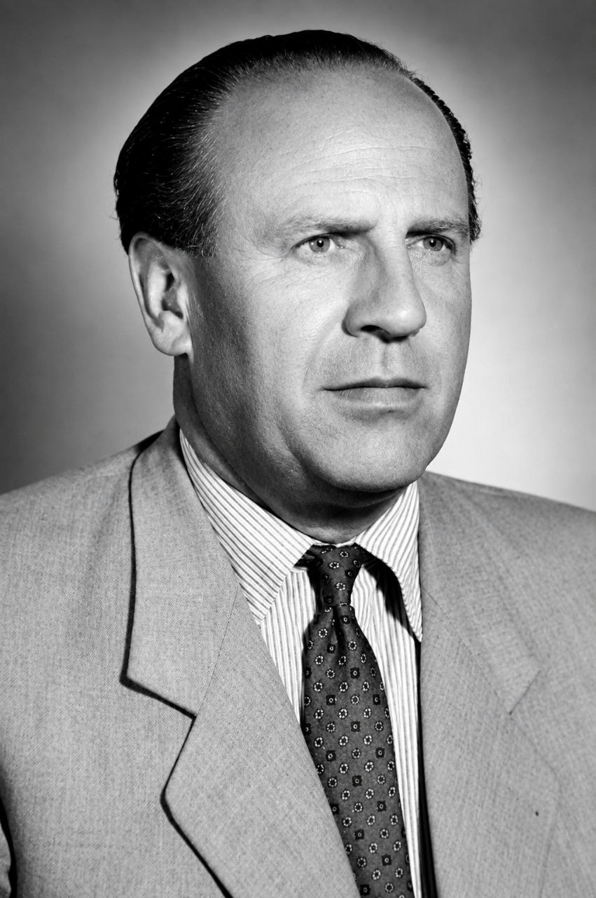

Oskar Schindler: The True Story of Humanity and Courage That Changed History

Oskar Schindler (1908–1974) — Righteous Among the Nations who saved 1,200 lives during World War II.
"The life story of Oskar Schindler, who saved 1,200 Jews during World War II. Prepared based on Thomas Keneally's novel and Steven Spielberg's film."
Amid the cruelties of Nazi Germany during World War II, Oskar Schindler was an extraordinary personality who spread the light of humanity. Starting as an ordinary businessman obsessed with money and luxury, his life transformed into that of a savior who rescued thousands of Jews, making it one of the most inspiring chapters in history.
Who Was Oskar Schindler?
Born on April 28, 1908, in what is now the Czech Republic, Schindler joined the Nazi Party in 1939 driven by the pursuit of financial gains and a luxurious lifestyle. When World War II broke out and Germany occupied Poland, he migrated to the city of Kraków, Poland, seeking further business opportunities.
The Factory and the Turning Point in Perspective
In Kraków, with the support of the German military, Schindler took over a cookware factory (Emalia). Initially, his goal was to make maximum profit at a minimal cost. To achieve this, he employed Jews from Nazi concentration camps as laborers at meager wages.
However, Schindler witnessed firsthand the atrocities and massacres committed by the Nazi army against the Jews. These sights completely altered his perspective. Shifting away from the goal of earning money, he made it his life's mission to save the lives of those helpless people.
Schindler's Jews: The Courageous Fight to Save Lives
To provide protection to the Jews working in his factory, Schindler adopted highly adventurous methods:
- He influenced Nazi officials and officers by giving them expensive liquor and huge bribes.
- He convinced higher authorities that the products manufactured in his factory were essential for the German military during the war, and therefore the workers there were vital to the nation.
- When the Nazis began mass deportations of Jews to death camps like Auschwitz, he manipulated official records to retain the names of his workers.
Thus, he successfully held back approximately 1,200 Jews (a group comprising men, women, and children) from the jaws of death. In history, they became known as 'Schindler's Jews' (Schindlerjuden).
Post-War Life and Media History
By the end of World War II, Schindler had spent all his possessions to save the lives of the Jews. Having faced severe financial hardships after the war, he passed away on October 9, 1974. His remains were buried with honors at the Yad Vashem memorial in Jerusalem, with the title "Righteous Among the Nations."
- Literary Acknowledgment: Schindler's Ark (1982), a Booker Prize-winning novel written by Australian author Thomas Keneally, first brought this history to global attention.
- Cinematic Acknowledgment: Based on this novel, the renowned Hollywood director Steven Spielberg directed the famous 1993 film Schindler's List, which won 7 Academy Awards (Oscars).
Frequently Asked Questions (FAQ)
1. Who is Oskar Schindler?
Oskar Schindler was a German businessman who saved the lives of over 1,200 Jews from Nazi camps during World War II.
2. What is 'Schindler's List'?
'Schindler's List' is the official list of names of Jews whom Oskar Schindler saved from Nazi persecution by providing them employment in his factory.
3. How was Schindler honored after his death?
He was honored at the 'Yad Vashem' memorial in Jerusalem with the title "Righteous Among the Nations."
"രണ്ടാം ലോകമഹായുദ്ധകാലത്ത് 1,200-ലധികം ജൂതരുടെ ജീവൻ രക്ഷിച്ച ഓസ്കാർ ഷിൻഡ്ലറുടെ ജീവിതകഥ. തോമസ് കെനീലിയുടെ നോവലിനെയും സ്റ്റീവൻ സ്പീൽബർഗിന്റെ സിനിമയെയും അടിസ്ഥാനമാക്കി തയ്യാറാക്കിയത്."
രണ്ടാം ലോകമഹായുദ്ധകാലത്ത് നാസി ജർമ്മനിയുടെ ക്രൂരതകൾക്കിടയിൽ മാനവികതയുടെ വെളിച്ചം വീശിയ അസാധാരണ വ്യക്തിത്വമായിരുന്നു ഓസ്കാർ ഷിൻഡ്ലർ. പണത്തോടും ആഡംബരത്തോടും കമ്പമുള്ള ഒരു സാധാരണ വ്യവസായിയായി ജീവിതം ആരംഭിച്ച്, ആയിരക്കണക്കിന് ജൂതരുടെ ജീവൻ രക്ഷിച്ച കാരുണ്യവാനായി മാറിയ അദ്ദേഹത്തിന്റെ ജീവിതം ചരിത്രത്തിലെ ഏറ്റവും പ്രചോദനാത്മകമായ അധ്യായങ്ങളിലൊന്നാണ്.
ആരായിരുന്നു ഓസ്കാർ ഷിൻഡ്ലർ?
1908 ഏപ്രിൽ 28-ന് ഇന്നത്തെ ചെക്ക് റിപ്പബ്ലിക്കിൽ ജനിച്ച ഷിൻഡ്ലർ, സാമ്പത്തിക ലാഭങ്ങളും ആഡംബര ജീവിതവും ലക്ഷ്യമിട്ട് 1939-ൽ നാസി പാർട്ടിയിൽ ചേർന്നു. രണ്ടാം ലോകമഹായുദ്ധം ആരംഭിക്കുകയും ജർമ്മനി പോളണ്ട് കീഴടക്കുകയും ചെയ്തതോടെ, കൂടുതൽ ബിസിനസ്സ് അവസരങ്ങൾ തേടി അദ്ദേഹം പോളണ്ടിലെ ക്രാക്കോവ് (Kraków) നഗരത്തിലേക്ക് കുടിയേറി.
ഫാക്ടറിയും കാഴ്ചപ്പാടിലെ വഴിത്തിരിവും
ക്രാക്കോവിൽ നാസി സൈന്യത്തിന്റെ പിന്തുണയോടെ ഷിൻഡ്ലർ ഒരു പാത്രനിർമ്മാണ ഫാക്ടറി (Emalia) ഏറ്റെടുത്തു. കുറഞ്ഞ ചെലവിൽ പരമാവധി ലാഭം ഉണ്ടാക്കുക എന്നതായിരുന്നു തുടക്കത്തിൽ അദ്ദേഹത്തിന്റെ ലക്ഷ്യം. ഇതിനായി നാസി കോൺസെൻട്രേഷൻ ക്യാമ്പുകളിൽ നിന്നുള്ള ജൂതന്മാരെ വളരെ തുച്ഛമായ കൂലി നൽകി തൊഴിലാളികളാക്കി അദ്ദേഹം നിയമിച്ചു.
എന്നാൽ, ജൂതന്മാർക്കെതിരെ നാസി സൈന്യം നടത്തുന്ന അതിക്രമങ്ങൾക്കും കൂട്ടക്കൊലകൾക്കും ഷിൻഡ്ലർ നേരിട്ട് സാക്ഷിയായി. ഈ കാഴ്ചകൾ അദ്ദേഹത്തിന്റെ കാഴ്ചപ്പാടിനെ പൂർണ്ണമായും മാറ്റിമറിച്ചു. പണം സമ്പാദിക്കുക എന്ന ലക്ഷ്യത്തിൽ നിന്ന് മാറി, ആ നിർദ്ധനരായ മനുഷ്യരുടെ ജീവൻ രക്ഷിക്കുക എന്നത് അദ്ദേഹം തന്റെ ജീവിതദൗത്യമാക്കി മാറ്റി.
ഷിൻഡ്ലറുടെ ജൂതന്മാർ: ജീവൻ രക്ഷിക്കാനുള്ള ധീരമായ പോരാട്ടം
തന്റെ ഫാക്ടറിയിൽ ജോലി ചെയ്യുന്ന ജൂതന്മാർക്ക് സംരക്ഷണം നൽകാൻ ഷിൻഡ്ലർ അത്യന്തം സാഹസികമായ വഴികൾ സ്വീകരിച്ചു:
- വിലകൂടിയ മദ്യവും വൻതുകയും കൈക്കൂലിയായി നൽകി അദ്ദേഹം നാസി ഉദ്യോഗസ്ഥരെയും ഓഫീസർമാരെയും സ്വാധീനിച്ചു.
- യുദ്ധകാലത്ത് ജർമ്മൻ സൈന്യത്തിന് തന്റെ ഫാക്ടറിയിൽ നിർമ്മിക്കുന്ന ഉൽപ്പന്നങ്ങൾ അത്യാവശ്യമാണെന്നും, അതിനാൽ അവിടുത്തെ തൊഴിലാളികൾ രാജ്യത്തിന് അത്യന്താപേക്ഷിതമാണെന്നും അദ്ദേഹം അധികാരികളെ വിശ്വസിപ്പിച്ചു.
- ആഷ്വിറ്റ്സ് (Auschwitz) പോലുള്ള മരണക്യാമ്പുകളിലേക്ക് നാസികൾ കൂട്ടത്തോടെ നാടുകടത്താൻ തുടങ്ങിയപ്പോൾ, തന്റെ തൊഴിലാളികളുടെ പേരുകൾ നിലനിർത്താൻ അദ്ദേഹം ഔദ്യോഗിക രേഖകളിൽ തിരിമറി നടത്തി.
ഇങ്ങനെ, ആണുങ്ങളും പെണ്ണുങ്ങളും കുട്ടികളും അടങ്ങുന്ന ഏകദേശം 1,200-ഓളം ജൂതന്മാരെ മരണത്തിന്റെ വായയിൽ നിന്ന് അദ്ദേഹം വിജയകരമായി രക്ഷിച്ചെടുത്തു. ചരിത്രത്തിൽ ഇവർ 'ഷിൻഡ്ലറുടെ ജൂതന്മാർ' (Schindlerjuden) എന്നറിയപ്പെട്ടു.
യുദ്ധാനന്തര ജീവിതവും മാധ്യമ ചരിത്രവും
രണ്ടാം ലോകമഹായുദ്ധം അവസാനിച്ചപ്പോഴേക്കും, ജൂതന്മാരുടെ ജീവൻ രക്ഷിക്കാനായി ഷിൻഡ്ലർ തന്റെ എല്ലാ സമ്പാദ്യങ്ങളും ചെലവഴിച്ചിരുന്നു. യുദ്ധത്തിനു ശേഷം severe സാമ്പത്തിക ബുദ്ധിമുട്ടുകൾ നേരിട്ട അദ്ദേഹം 1974 ഒക്ടോബർ 9-ന് അന്തരിച്ചു. ജെറുസലേമിലെ 'യാദ് വാഷേം' (Yad Vashem) സ്മാരകത്തിൽ "Righteous Among the Nations" എന്ന ബഹുമതിയോടെ അദ്ദേഹത്തിന്റെ ഭൗതികശരീരം സംസ്കരിക്കപ്പെട്ടു.
- സാഹിത്യ അംഗീകാരം: ഓസ്ട്രേലിയൻ എഴുത്തുകാരനായ തോമസ് കെനീലി (Thomas Keneally) എഴുതിയ ബുക്കർ സമ്മാനം നേടിയ Schindler's Ark (1982) എന്ന നോവലാണ് ഈ ചരിത്രത്തെ ആദ്യമായി ആഗോള ശ്രദ്ധയിൽ കൊണ്ടുവന്നത്.
- സിനിമാറ്റിക് അംഗീകാരം: ഈ നോവലിനെ ആസ്പദമാക്കി പ്രശസ്ത ഹോളിവുഡ് സംവിധായകൻ സ്റ്റീവൻ സ്പീൽബർഗ് (Steven Spielberg) സംവിധാനം ചെയ്ത 1993-ലെ Schindler's List എന്ന സിനിമ 7 അക്കാദമി അവാർഡുകൾ (ഓസ്കാർ) കരസ്ഥമാക്കി.
പതിവായി ചോദിക്കുന്ന ചോദ്യങ്ങൾ (FAQ)
1. ആരാണ് ഓസ്കാർ ഷിൻഡ്ലർ?
രണ്ടാം ലോകമഹായുദ്ധകാലത്ത് നാസി ക്യാമ്പുകളിൽ നിന്ന് 1,200-ലധികം ജൂതന്മാരുടെ ജീവൻ രക്ഷിച്ച ജർമ്മൻ വ്യവസായിയായിരുന്നു ഓസ്കാർ ഷിൻഡ്ലർ.
2. എന്താണ് 'ഷിൻഡ്ലറുടെ ലിസ്റ്റ്' (Schindler's List)?
തന്റെ ഫാക്ടറിയിൽ ജോലി നൽകി നാസി പീഡനങ്ങളിൽ നിന്ന് ഓസ്കാർ ഷിൻഡ്ലർ രക്ഷപ്പെടുത്തിയ ജൂതന്മാരുടെ ഔദ്യോഗിക നാമവിവരപ്പട്ടികയാണ് 'ഷിൻഡ്ലറുടെ ലിസ്റ്റ്'.
3. മരണശേഷം ഷിൻഡ്ലർ എങ്ങനെ ആദരിക്കപ്പെട്ടു?
ജെറുസലേമിലെ 'യാദ് വാഷേം' സ്മാരകത്തിൽ "Righteous Among the Nations" എന്ന പരമോന്നത ബഹുമതി നൽകി അദ്ദേഹത്തെ ആദരിച്ചു.